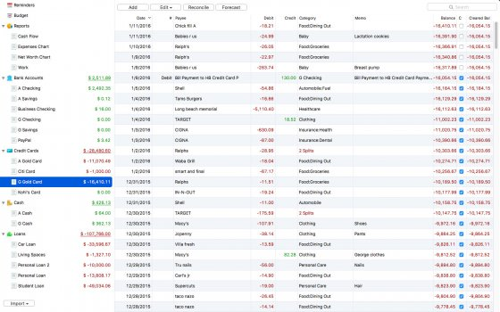

Добавить программу Мои программы
Moneyspire for Linux 16.0.44
Бесплатная

Moneyspire - лучший инструмент для планирования бюджета, управления личными финансами и денежными средствами для Mac, Windows, Linux, iPhone, iPad, iPod Touch. С Moneyspire вы легко приведете в порядок ваши финансы. Контроль счетов Следите за вашими банковскими счетами, кредитными картами и транзакциями, чтобы быть в курсе, куда уходят ваши деньги. Напоминания о платежах Установите напоминания, чтобы видеть предстоящие платежи и больше никогда о них не забывать. Планирование бюджета Заложите в бюджет все ваши расходы, придерживайтесь его и следите за процессом в режиме реального времени. Создание отчетов Подробные отчеты и графики наглядно покажут, сколько и на что вы тратите и помогут упростить налоговую отчетность. Поддержка интернет-банкинга Импортируйте транзакции с сайта вашего банка и оплачивайте счета напрямую. Разделение транзакций Разбейте транзакции на разные категории для сверхточного бюджета. Согласование с выписками Сверяйтесь с вашими банковскими выписками, чтобы избежать мошенничества и банковских ошибок, а также убедиться, что каждая транзакция учтена. Мультивалютные счета Программа работает со всеми валютами и мультивалютными счетами, включая переводы между зарубежными счетами. Поддержка инвестиционных счетов Управляйте вашими инвестициями и получайте информацию о последних котировках акций. Печать чеков Распечатайте чеки и ваучеры для упрощения ручной оплаты счетов. Легкий импорт и экспорт Поддержка форматов OFX/QFX/QIF/CSV; экспорт в таблицы. Управление деньгами на ходу Используйте Moneyspire на компьютере, планшете или смартфоне. Где бы вы не находились, вы всегда на вершине финансового менеджмента. Ваша информация в целости и сохранности С Moneyspire доступна безопасность на уровне банков - данные, используемые в операциях интернет-банкинга, шифруются и передаются по протоколу SSL. Moneyspire Inc не собирает и не хранит ваши личные и финансовые данные, ваша информация остается у вас на диске.
работает под